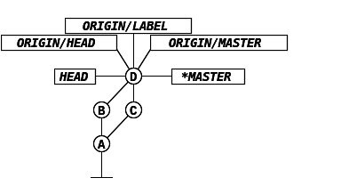

Writes files to the repo. (Into the staging area.)\n\n\n
\nCOMMIT
Creates commit object for added files, which \n has an id, and then puts labels on it [HEAD, \n MASTER] (or moves them from previous commit). \n (Prints branch label that it's advancing and \n objects hash)
\n\nD LABEL BRANCH
Stucks a new label on HEAD (withouth \n\ / parameter it prints local branches). \n(A)-*MASTER (With -r will print remote branches/ \n | all the references that you have.)\n---
\n
Switches which branch it's going to\n advance at commit (from master to\n label). (If the labels were pointing\n to different commits it would also\n get the files)
\n
Move current label to commit HEAD-1,\n and also do checkout (--hard)
\n--all
Shows nice history with\n graph
\n\nHECKOUT v1.0
If no branch label is\net message: "You are in detached\n that if you want to keep your\n create a new branch.
\n\n\n\n\n\nR\n\n\n\n\n\n\n,\n\n
\n\n\n\n\n\nR\n\n\n\n\n\n\n,\n\n
\n\n
\n\n
\n\n \n
\n\n \n
\nBRANCHES
they mean: last time I\nth origin, thats where its label\n\n\nid not pull over LABEL branch,\nt pulls over only the default\nhich is master (note that origin\nr are just names, they have no \nnce).\n\n
\n\n\n\n
\n\n\n\n

\n-v
List remotes (defaultly named origin)
\nPULL
Same as FETCH + MERGE
\nbranch>
Pushes changes made to the\n local branch to origin repo.